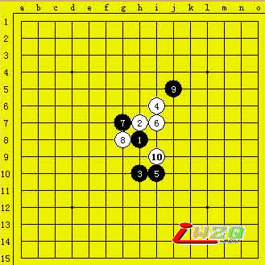

第五届上海名人赛复赛末轮 俞满江五段vs仇云飞五段
首页
五子棋教室
#1 第五届上海名人赛复赛末轮 俞满江五段vs仇云飞五段 作者：有志青年 发表时间：2007-5-4 7:26:52
原文地址：http://www.shwzq.com/online/ShowArticle.asp?ArticleID=1310
点击进入直播页面
(14:07) 评论员 顾炜 说：大家好，现在是直播第五届上海连珠名人邀请赛最后一轮。
(14:08) 评论员 顾炜 说：本论直播的是俞满江五段和仇云飞五段的对局。
(14:11) 评论员 顾炜 说：这一轮对局的结果将直接影响到最终的排名。俞满江只要和棋，就能拿到本届名人称号。
(14:12) 评论员 顾炜 说：俞满江布局瑞星。非常平衡的局面，黑白双方都有机会。仇云飞没有提出交换，因为瑞星在变化上而言还是白棋更主动些。
(14:14) 评论员 顾炜 说：双方目前前10手的定式很正常。

(14:17) 评论员 顾炜 说：现在顺便介绍一下其他对局情况。除了吴昊六段和曹冬六段属于同城争斗外，其余四台都是上海棋手和日本棋手的对抗。
(14:21) 评论员 顾炜 说：而且有趣的是，上海棋手的领军人物葛凌峰七段在上半区同日本棋手的领军人物山口釉水九段，上海第三代棋手代表中的戈宇六段、朱建锋六段分别对阵日本老一代的矶部泰山九段和三森政男九段，其中三森九段在考验朱建锋六段溪月变化。张轶峰二段则同冈部宽七段角逐。
(14:22) 评论员 顾炜 说：俞满江还是选择了比较常见的变化。仇云飞则以老变化应对。
(14:22) 评论员 顾炜 说：13、14都是比较经典的攻防要点。
(14:23) 评论员 顾炜 说：到23手，双方下的变化和俞满江同吴昊的对局一模一样。
(14:24) 评论员 顾炜 说：仇云飞率先变招。
(14:25) 评论员 顾炜 说：俞的第25手意图迅速打开局面，同时加强黑棋两边的联系。仇的白26用意无非也是割断黑棋联络，同时稳固自己势力。
(14:26) 评论员 顾炜 说：黑27防御和攻击并存的招数。白28是意料中的强防，威力非常强，也符合仇云飞的风格。
(14:30) 评论员 顾炜 说：满江正在长考中。
(14:32) 评论员 顾炜 说：满江沉稳的防了一手，看来已经做好了打持久战的心理准备，这对于一名成熟型棋手来说，在什么情况下用什么策略下棋很重要。
(14:33) 评论员 顾炜 说：山口和葛凌峰也在下瑞星，同样的黑13，但是白14是另外一个经典防御。
(14:34) 评论员 顾炜 说：曹冬和吴昊是下松月布局，双方目前总共只下了4手棋。
(14:36) 评论员 顾炜 说：朱建峰和三森的对局耐人寻味，三森给了朱建锋必胜打点，白8是比较奇特的一个打点。目前小朱看不出任何优势。
(14:42) 评论员 顾炜 说：仇云飞活三了。
(14:43) 评论员 顾炜 说：似乎想在右边做文章。
(14:44) 评论员 顾炜 说：曹冬和吴昊之间在这段时间只下了2手棋，双方落子的速度特别慢。
(14:47) 评论员 顾炜 说：双方非常小心懂得交换。白32基本断绝了黑棋下方左右两边的联系。目前俞满江应该在考虑如何合理分配子力，以达到最优化的效果和积极的效率。
(14:48) 评论员 顾炜 说：整个赛场非常安静，选手们投入、忘我拼搏的精神也感染了在场的每个人。相信这次比赛的对局将都是奉献给大家的精彩名局。
(14:52) 评论员 顾炜 说：这次直播期间也要感谢中华连珠网、中国连珠网、爱五子棋网、新浪网中国五子棋博客和联众五子棋论坛的支持和帮助，尤其要感谢江阴五子棋的技术支持，同时也要谢谢全体工作人员的默默无闻的工作。
(14:56) 评论员 顾炜 说：现在全场第一盘对局结束，葛凌峰七段战胜山口九段，他也因此获得本次的季军。
(14:57) 评论员 顾炜 说：朱建锋应该也已经取得胜利，目前已经是必胜型了。
(14:59) 评论员 顾炜 说：俞满江利用先手消除右边的隐患后开始到左边对白棋开始压缩空间战术。

(15:06) 评论员 顾炜 说：刚才说的不完全正确，裁判组经过计算，如果曹冬和吴昊和棋，尽管吴昊和葛凌峰同分，但是小分是吴昊略高。因此，葛凌峰还不能说稳获季军。
(15:07) 评论员 顾炜 说：对于刚才没有经过计算的说法，表示歉意。
(15:08) 评论员 顾炜 说：曹冬和吴昊今天的进程特别慢，到现在盘面上还是
#2 Re:第五届上海名人赛复赛末轮 俞满江五段vs仇云飞五段 作者：青发伊凌寺 发表时间：2007-5-4 23:37:05
好,真是高手.